Instalación de sistemas operativos¶
Instalación de sistemas operativos¶
Instalar y configurar un sistema operativo incluye varios pasos clave, desde la selección del sistema adecuado hasta su configuración final para satisfacer las necesidades específicas del usuario.
Elección del sistema operativo¶
El primer paso para seleccionar un sistema operativo es conocer las necesidades del usuario que lo va a explotar. No tiene sentido utilizar un sistema operativo complejo para un usuario principiante, ni un sistema operativo generalista para un experto en ciberseguridad. Por eso, es necesario que conozcas el usuario tipo de cada uno de los sistemas operativos más usados de la actualidad.
Instalación¶
Por lo general, cuando compramos un ordenador personal, este suele tener el sistema operativo preinstalado, ya sea de forma comercial con Windows o MAC o de forma libre y gratuita con alguna distribución Linux. Sin embargo, en muchas ocasiones nos vemos obligados a formatear el disco duro de nuestro ordenador y a reinstalar de nuevo el sistema operativo. Lo primero que necesitamos para ello es el medio de instalación, como una unidad USB de arranque o un disco, que actuará como el guión desde el cual se instalará el sistema operativo (en los dispositivos móviles no es necesario, puesto que ya lo incorporan de fábrica).
Todos los sistemas operativos que lo necesitan cuentan con herramientas que te permitirán crear este disco de arranque.
En el caso de Windows, aquí puedes crear un medio de instalación para cualquiera de los sistemas operativos de Microsoft.
Dentro de la BIOS tenemos que cambiar la secuencia de arranque y dejar en primer lugar el lector de DVD o la unidad USB (si estamos utilizando un USB booteable). Tras estos cambios, iniciamos el ordenador y comenzará la instalación del sistema operativo.
Una vez iniciado el sistema desde el medio de instalación, solamente hay que seguir los pasos del asistente de instalación del sistema operativo elegido.
Una vez terminada la instalación tendrás un sistema operativo completamente limpio, listo para usar.

Si te interesa el tema, en el siguiente vídeo puedes aprender cómo instalar windows desde un USB.
Virtualización¶
En general, el objetivo de la virtualización es poder utilizar simultáneamente en un mismo ordenador dos o más sistemas operativos. Por lo tanto, para poder hablar de virtualización tienen que estar funcionando a la vez varios sistemas operativos.
Ventajas Virtualización¶
La virtualización tiene muchas aplicaciones interesantes:
- La más habitual es poder ejecutar aplicaciones que no están disponibles para el sistema operativo host (anfitrión), pero sí para otro sistema operativo que se instalaría como guest (huésped).
- La virtualización permite la conservación del software. Debido al progreso del hardware, los procesadores antiguos dejan de fabricarse y los sistemas operativos y aplicaciones antiguos dejan de desarrollarse y dejan de funcionar en el hardware moderno. Pero si el sistema operativo puede instalarse como guest, puede seguir utilizándose para siempre.
- La virtualización permite depurar y comprobar el funcionamiento de los programas y los sistemas operativos. Si un programa provoca un fallo de funcionamiento total, si se está ejecutando como guest, el sistema host puede recoger información sobre el motivo del fallo.
- La virtualización permite un mejor aprovechamiento del hardware, ya que un mismo ordenador puede contener muchos sistemas guests utilizados por usuarios diferentes, aislados unos de otros.
Hipervisor¶
Un hipervisor, conocido también como monitor de máquinas virtuales, es un proceso (programa en ejecución) que crea y ejecuta máquinas virtuales. Un hipervisor permite que un ordenador host preste soporte a varias máquinas virtuales invitadas mediante el uso compartido virtual de sus recursos, como la memoria y el procesamiento. Por lo tanto el hipervisor es la pieza fundamental de la virtualización.
- El sistema operativo que tiene el control del hardware recibe el nombre de host (anfitrión).
- Es el sistema operativo que se instaló primero en el ordenador y el que se pone en marcha al arrancar el ordenador. Los demás sistemas operativos reciben el nombre de guests (huéspedes) y pueden ejecutarse o no a voluntad del usuario.
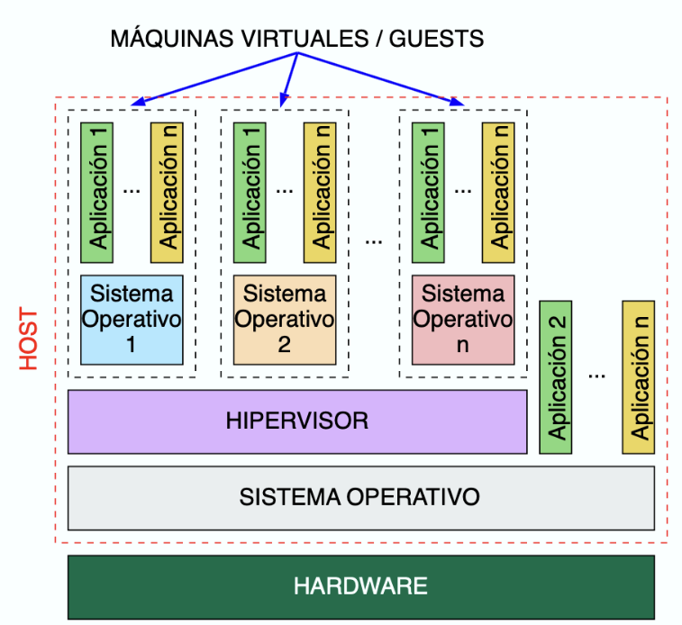
Configuración y administración de un sistema virtualizado con Oracle VM VirtualBox¶
Oracle VM VirtualBox es una plataforma permite la creación de máquinas virtuales y una red virtual para conectar estas máquinas sin ocasionar interferencias con las máquinas o redes físicas en las que se encuentre el equipo anfitrión.
Creación de una máquina virtual¶
A la hora de crear una máquina virtual, Oracle VM VirtualBox ofrece un asistente que guiará a través de todo el proceso.
-
Para poder realizar el proceso necesitamos un fichero imagen (ISO), archivo que contiene el instalador del sistema operativo, que puede ser descargado desde las webs del sistema operativo que vayamos a instalar.
Vamos a realizar el ejemplo de creación de una máquina virtual corriendo la distribución ubuntu. El primer paso sería acudir a la web de ubuntu y descargar el fichero ISO de la última versión Ubuntu LTS de escritorio. En la web ubuntu podemos encontrar una opción de Download, a partir de la cual nos descarga la ISO correspondiente. La imagen .iso es bastante grande, por lo que tardará un poco en descargarse en conexiones más lentas.
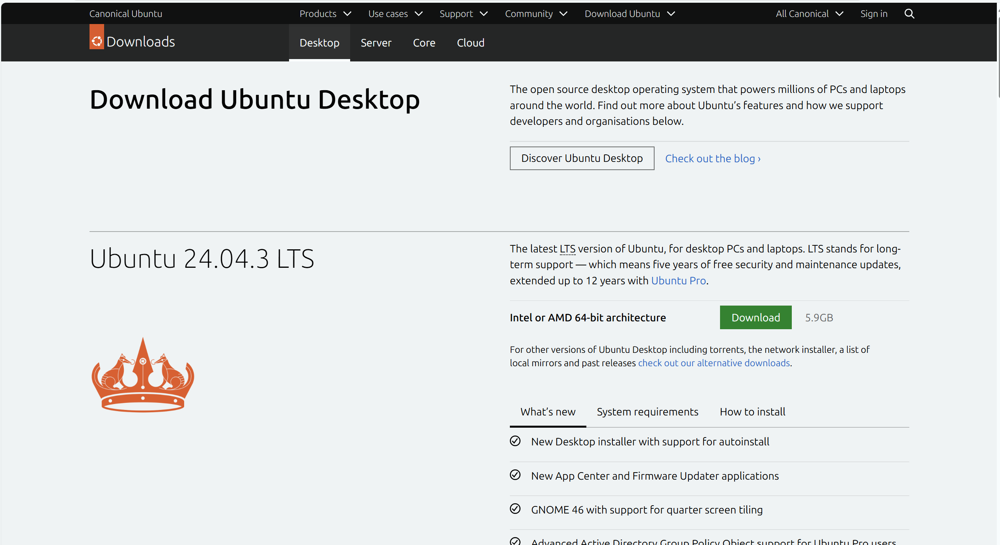
Descarga ISO ubuntu desktop -
Una vez descargado podemos arrancar VirtualBox para iniciar el proceso de creación de la máquina. Seleccionamos la opción NUEVA.
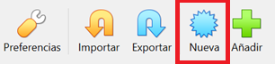
-
Configura los elementos mínimo para la creación de una máquina virtual:
- Nombre que identifique tu máquina virtual.
- El tipo de sistema operativo que contendrá la máquina y su arquitectura,
- Ruta archivo de instalación
.iso
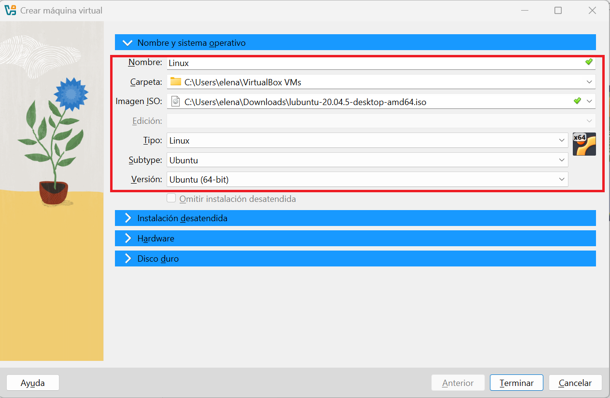
-
A continuación, debes indicar el tamaño de la memoría principal.
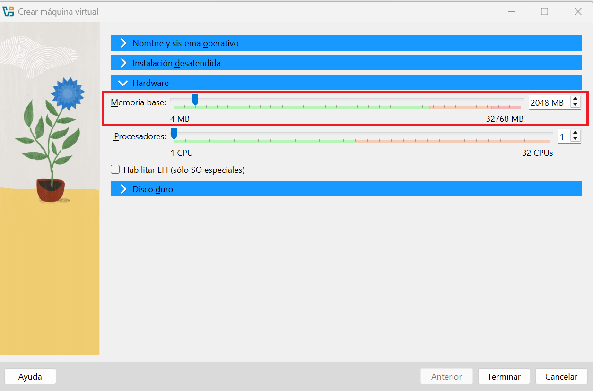
Asignación 2GB de RAM a la máquina virtual Warning
Hay que tener presente los recursos de los que dispone la máquina anfitrión, y no ceder demasiados de éstos para que el rendimiento no caiga hasta límites insufribles. Habitualmente el software de virtualización avisa al usuario si va a superar estos límites.
-
Por último, debemos indicar que deseamos crear un nuevo disco duro para esta máquina. Seleccionamos formato VDI, tamaño fijo y un espacio, por ejemplo de 10Gb.
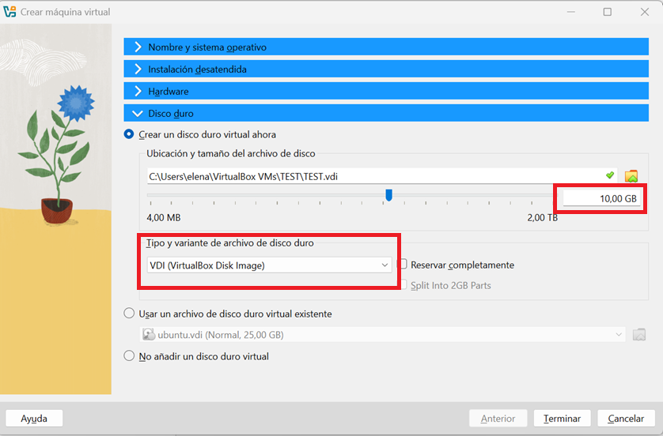
Creación de disco virtual -
Haz clic en ‘Inicio’. Se iniciará el entorno en vivo para Ubuntu, con la opción de ‘Probar Ubuntu’ o ‘Instalar Ubuntu’.
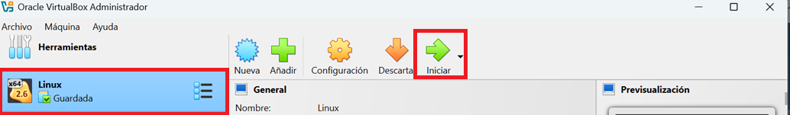
Iniciar la máquina virtual -
Sigue los pasos de la instalación.
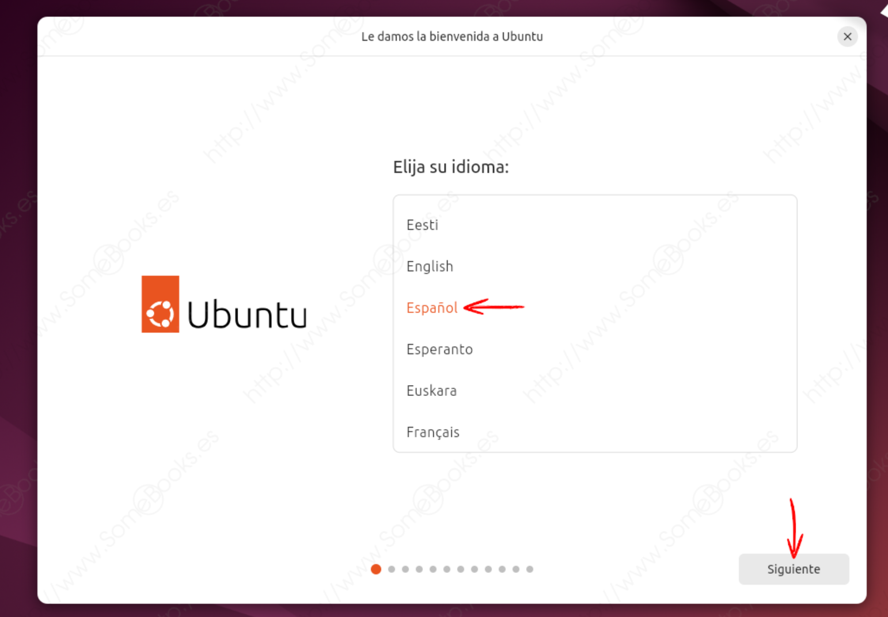
- Una vez que Ubuntu esté instalado, la máquina se reiniciará y eliminará la imagen .iso. Cuando la máquina se reinicia, puede iniciar sesión en su instalación de Ubuntu y comenzar a explorar Linux.
Referencias¶
Actividades¶
📝 AA3.5 Juego instalación sistema operativo¶
(C.ESP2 / CE2.3 / IC1-3p)
Para comprobar si te has familiarizado con el proceso de instalación de un sistema operativo realiza el siguiente reto.
Sube a la tarea una captura de pantalla de tu puntuación total.
📝 AA3.6 Instalación sistema operativo¶
(C.ESP2 / CE2.3 / IC1-3p)
- Describe los pasos para instalar un sistema operativo descargado de Internet en un ordenador.
- Busca y escribe la ruta de descarga de la ISO de Windows
- ¿Cómo podemos cambiar la secuencia de arranque de un ordenador y para qué se hace?
- ¿Qué es un USB booteable?
- ¿Qué es un LiveCD? ¿Y un LiveUSB?
- Diferencias entre LiveCD y USB booteable
- Busca imágenes de la pantalla de configuración de los sistemas operativos de teléfonos móviles.
📝 PT3.7 Reciclaje de los ordenadores antiguos del centro "Linux"¶
(C.ESP2 / CE2.3 / IC2-10p)
La residencia de mayores del pueblo va a impartir un curso de introducción a la informática para mayores y ha hecho un llamamiento a la población para que donen ordenadores que ya no utilicen para este fin.
En el centro disponemos de algunos ordenadores antiguos que no utilizamos (Los que empleamos en la situación de aprendizaje del apartado anterior) y sería una buena idea donarlos para por una parte reutilizarlos en lugar de tirarlos al punto limpio y por otra parte darles un uso social.
Como son ordenadores antiguos, vamos a instalarles un sistema operativo ligero, pero a la vez actual. Además, sería interesante optar por un sistema operativo libre para no tener que gastar dinero en licencias.
Para ello, realiza los siguientes pasos:
- Investiga sobre sistemas operativos ligeros para ordenadores antiguos basados en Linux.
- Descarga la ISO del sistema operativo elegido.
- Instala el sistema operativo elegido en la máquina virtual siguiendo los pasos del siguiente vídeo:
- Presenta un informe con evidencia de todos los pasos realizados para su instalación y el resultado final.
📝 PT3.8 Reciclaje de los ordenadores antiguos del centro "Windows"¶
(C.ESP2 / CE2.3 / IC2-10p)
La residencia de mayores del pueblo ha recibido más ordenadores y nos piden ahora que instalemos en estos últimos Windows.
Instala el sistema operativo disponible aquí
- Presenta un informe con evidencia de todos los pasos realizados para su instalación y el resultado final.
Warning
Para evitar el error de KEY PRODUCTO:
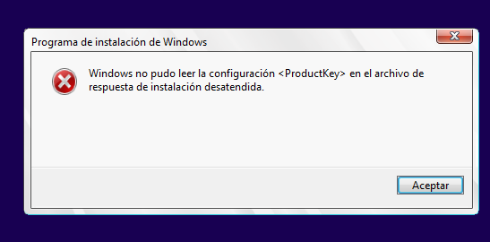
Sigue los siguientes pasos:
-
Al crear la nueva máquina virtual, en la parte inferior, desactiva la casilla “Instalación desatendida” o pulsa el botón “Omitir instalación desatendida”.
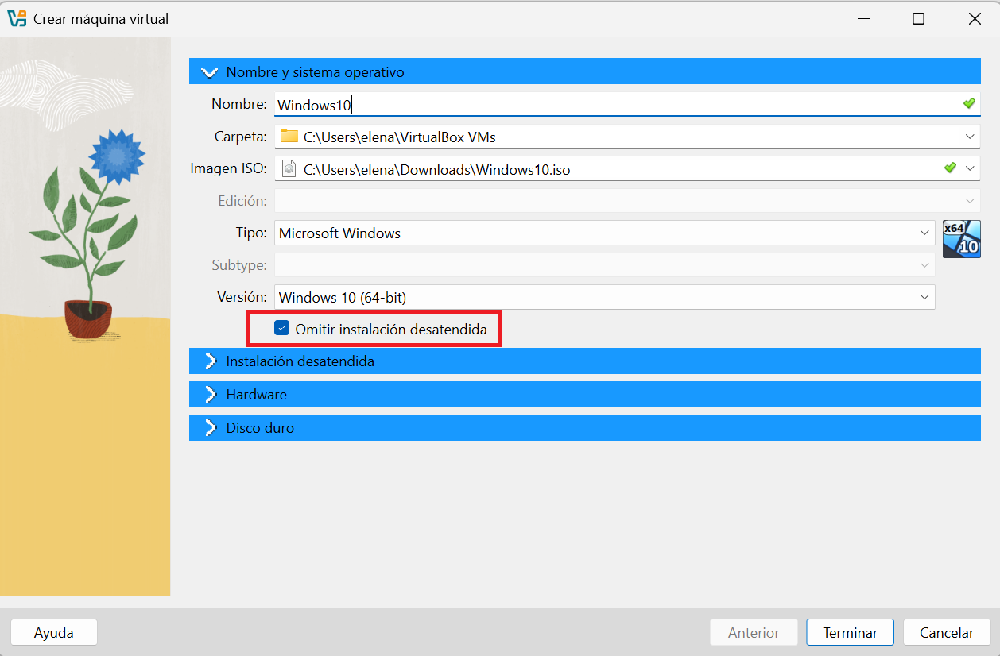
Omitir instalación desatendida -
Selecciona el botón Configuración.
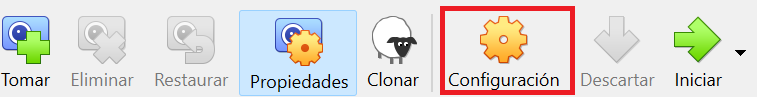
- Desactiva el adaptador de red en VirtualBox: En la ventana de la máquina (antes de iniciar), ve a Configuración → Red → desmarca “Habilitar adaptador de red”.
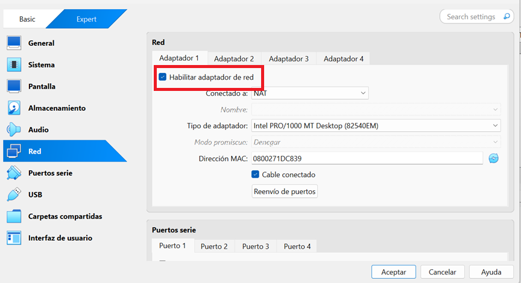
- Inicia la máquinia y empieza la instalación.
-
Indicar que no tenemos Key Product:
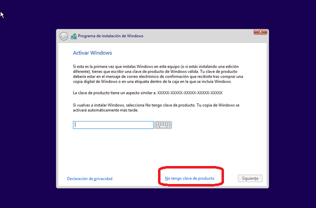
Key Product -
Seleccionar instalación avanzada
- Seguir los pasos